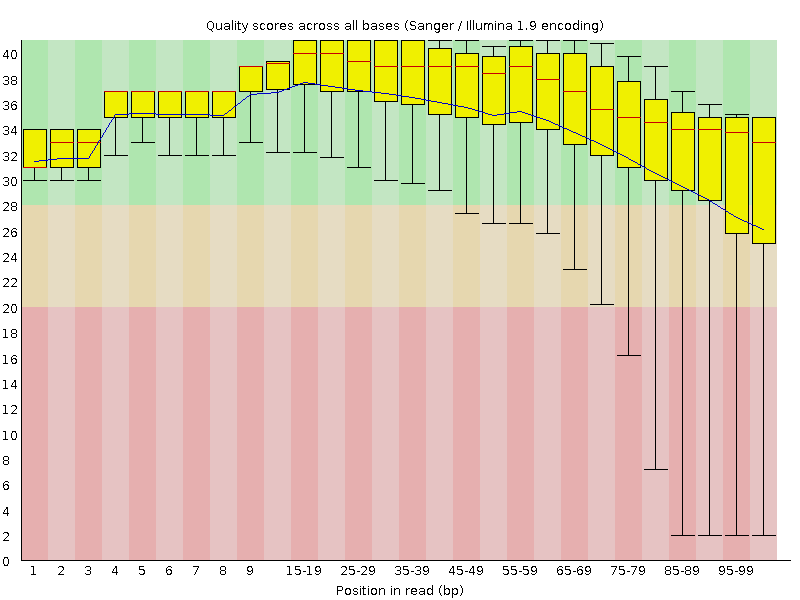
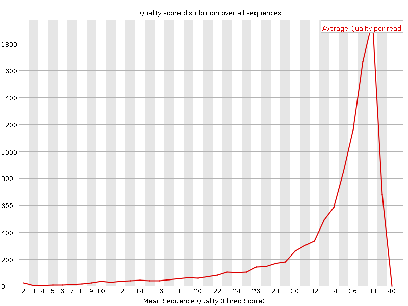
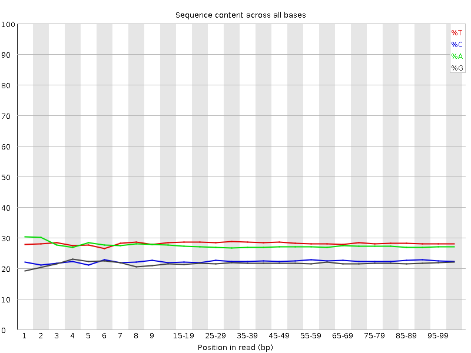
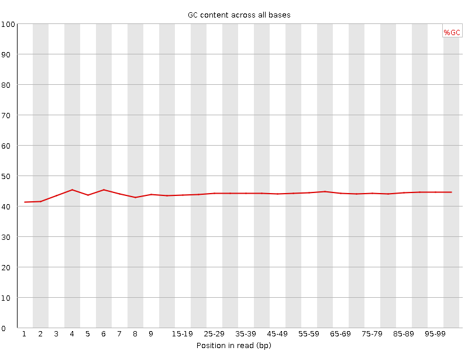
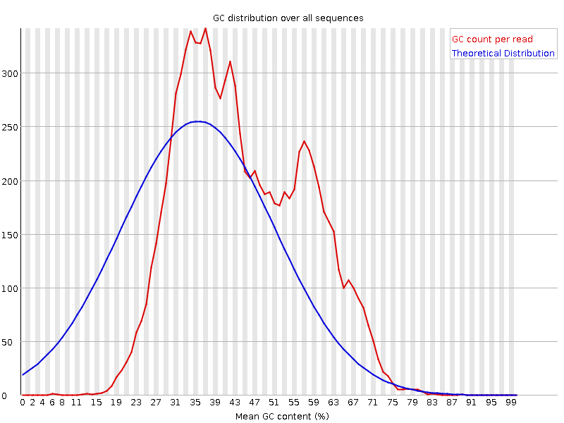
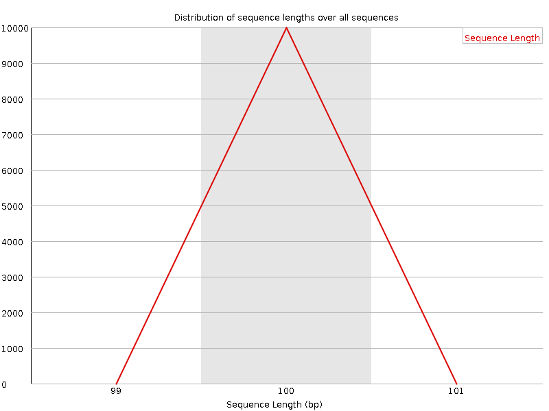
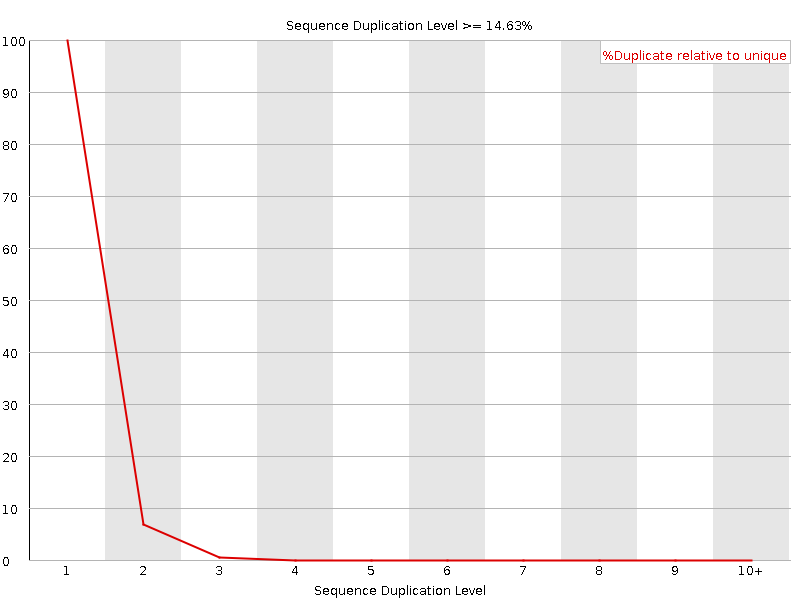
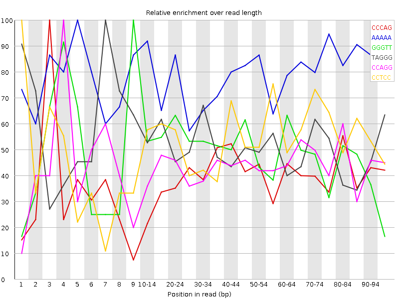

![[OK]](Icons/tick.png) Basic Statistics
Basic Statistics
| Measure | Value |
|---|---|
| Filename | SRR1002940.r2.temp.fq |
| File type | Conventional base calls |
| Encoding | Sanger / Illumina 1.9 |
| Total Sequences | 10000 |
| Filtered Sequences | 0 |
| Sequence length | 100 |
| %GC | 44 |
Per base sequence quality

Per sequence quality scores

Per base sequence content

Per base GC content

![[FAIL]](Icons/error.png) Per sequence GC content
Per sequence GC content

Per base N content

Sequence Length Distribution

Sequence Duplication Levels

![[WARN]](Icons/warning.png) Overrepresented sequences
Overrepresented sequences
| Sequence | Count | Percentage | Possible Source |
|---|---|---|---|
| TAGGGGTTAGGGTTAGGGTTAGGGGTTAGGGTTAGGGTTAGGGGTTAGGG | 13 | 0.13 | No Hit |
| TTAGGGGTTAGGGTTAGGGTTAGGGGTTAGGGTTAGGGTTAGGGGTTAGG | 11 | 0.11 | No Hit |
Kmer Content

| Sequence | Count | Obs/Exp Overall | Obs/Exp Max | Max Obs/Exp Position |
|---|---|---|---|---|
| CCCAG | 2470 | 3.856031 | 9.741146 | 3 |
| AAAAA | 5690 | 3.8351145 | 4.8526664 | 5 |
| GGGTT | 2850 | 3.6094472 | 7.294579 | 9 |
| TAGGG | 2685 | 3.5440383 | 6.968992 | 7 |
| CCAGG | 2110 | 3.4185584 | 7.7764907 | 4 |
| CCTCC | 2355 | 3.3990626 | 6.234963 | 1 |
| GGCCC | 1640 | 3.2476523 | 7.603942 | 2 |
| CTGGG | 1990 | 3.2104974 | 4.6461544 | 1 |
| GCCTC | 2125 | 3.1830552 | 5.751728 | 9 |
| CCTGG | 1980 | 3.0779917 | 5.223041 | 6 |
| GGAGG | 1755 | 3.0624685 | 4.6065984 | 95-96 |
| GGCAG | 1805 | 3.0349724 | 7.263454 | 9 |
| TTTTT | 5530 | 3.031096 | 4.104141 | 10-14 |
| AGGGT | 2295 | 3.0292618 | 8.869626 | 8 |
| GGGAG | 1725 | 3.0101187 | 5.02538 | 8 |
| GGGGG | 1275 | 2.822194 | 6.3745723 | 95-96 |
| AGGGG | 1615 | 2.818169 | 6.7005067 | 2 |
| CAGGC | 1730 | 2.8028939 | 6.998842 | 8 |
| GGTTA | 2660 | 2.6558 | 5.2714434 | 4 |
| GCTGG | 1615 | 2.6055043 | 5.4205136 | 8 |
| ACCCT | 2170 | 2.562494 | 5.101158 | 1 |
| CAGCC | 1620 | 2.5290568 | 5.245232 | 6 |
| GGGCC | 1220 | 2.507278 | 6.905003 | 95-96 |
| CCCTA | 2115 | 2.4975462 | 5.6679535 | 2 |
| GGGGT | 1455 | 2.4361234 | 7.2327247 | 3 |
| GGTGG | 1435 | 2.4026368 | 5.625452 | 3 |
| GCCCA | 1510 | 2.3573306 | 5.2452326 | 2 |
| GTGGG | 1385 | 2.3189216 | 6.4290886 | 6 |
| CCCAC | 1535 | 2.3090584 | 5.0541453 | 1 |
| AGAGG | 1610 | 2.2148192 | 5.2823305 | 7 |
| CAGGA | 1645 | 2.1805263 | 5.089892 | 8 |
| AGAGA | 2005 | 2.1744263 | 5.205392 | 5 |
| GGGGC | 995 | 2.1221828 | 5.1186194 | 1 |
| GCCCC | 1085 | 2.0703247 | 5.495195 | 8 |
| GAGAG | 1475 | 2.0291047 | 6.602913 | 4 |
| TGGGC | 1210 | 1.9521117 | 6.194873 | 2 |
| AGCCA | 1310 | 1.6732074 | 5.5175223 | 7 |
| GAAGG | 1215 | 1.6714319 | 5.9426217 | 6 |
| GCCAC | 900 | 1.4050314 | 5.245232 | 8 |
| TGGAA | 1300 | 1.3527431 | 5.4939895 | 4 |